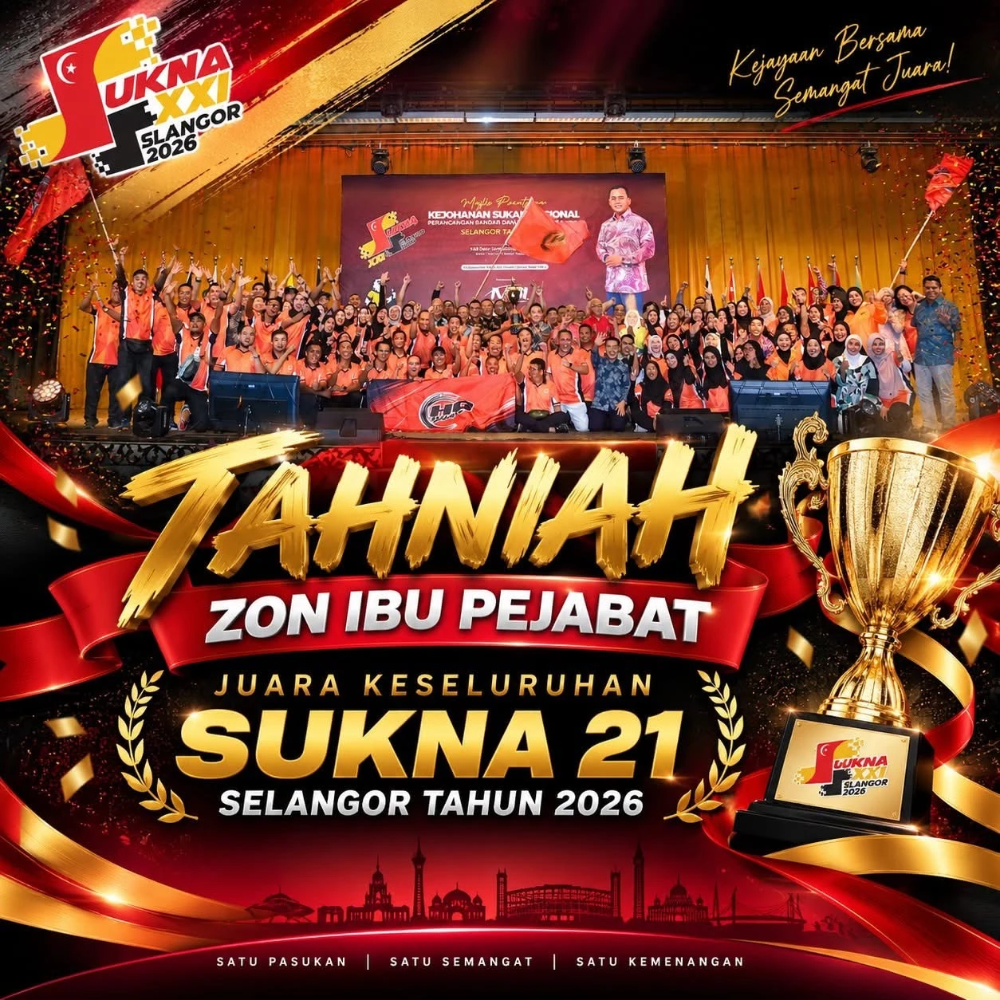
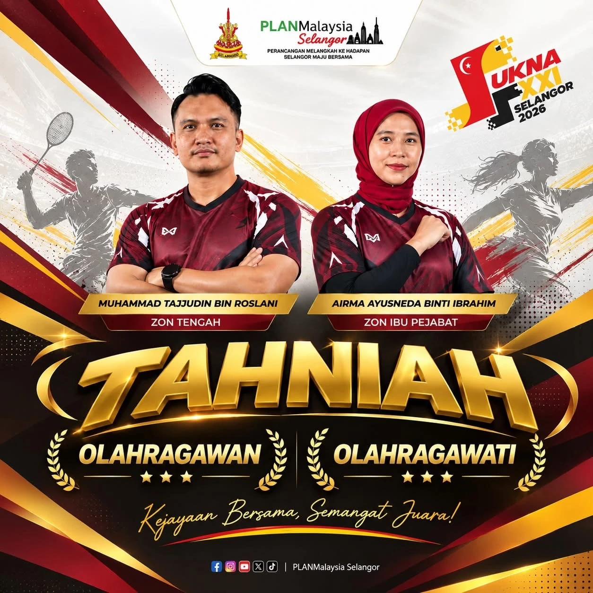
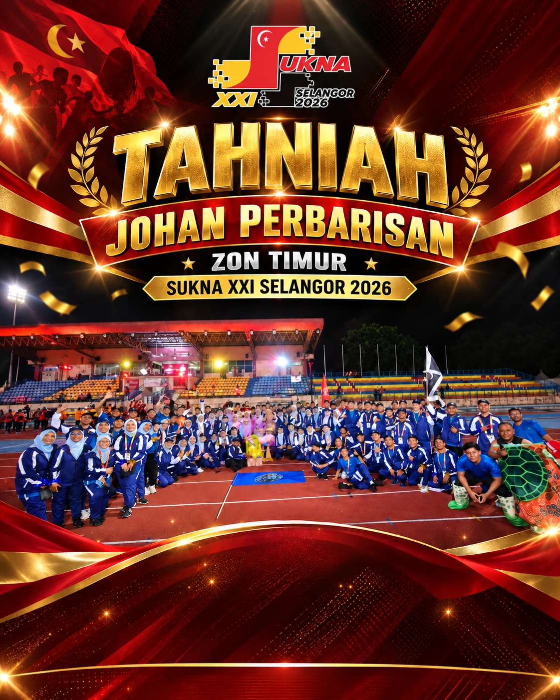

17–20 SEPTEMBER 2026 · UPM SERDANG
SUKNA XXISelangor 2026
Kejohanan telah melabuhkan tirai. Portal ini kini menjadi rekod rasmi keputusan, anugerah, sorotan dan arkib SUKNA XXI.

JUARA KESELURUHANZON IBU PEJABAT
KEPUTUSAN RASMI
Lihat keputusan penuh
Kedudukan Akhir Keseluruhan
Ranking akhir berdasarkan jumlah mata rasmi kejohanan.
1
Zon Ibu Pejabat5 emas · 5 perak · 3 gangsa
15medal
114mata
2
Zon Timur4 emas · 5 perak · 1 gangsa
10medal
97mata
3
Zon Tengah4 emas · 1 perak · 3 gangsa
15medal
75mata
4
Zon Selatan1 emas · 2 perak · 4 gangsa
7medal
52mata
5
Zon Utara1 emas · 1 perak · 3 gangsa
5medal
40mata
6
Zon Sabah0 emas · 1 perak · 1 gangsa
2medal
18mata
ANUGERAH & PENCAPAIAN KHAS
Wajah-wajah kecemerlangan SUKNA XXI
🏆 JUARA KESELURUHAN
Zon Ibu Pejabat
114 mata · kedudukan pertama keseluruhan.

OLahragawanMuhammad Tajjudin bin RoslaniZon Tengah
OLahragawatiAirma Ayusneda binti IbrahimZon Ibu Pejabat

PERBARISAN TERBAIK
Zon Timur
Poster rasmi tahniah untuk Johan Perbarisan SUKNA XXI Selangor 2026.
PODIUM ACARA
Semua 15 acara
Keputusan mengikut sukan
Johan, Naib Johan dan Ketiga berdasarkan rekod keputusan akhir.
⚽
Bola Sepak
🥇Zon Tengah
🥈Zon Timur
🥉Zon Utara
🥅
Bola Jaring
🥇Zon Timur
🥈Zon Ibu Pejabat
🥉Zon Tengah
♟
Karom Berpasukan
🥇Zon Ibu Pejabat
🥈Zon Timur
🥉Zon Tengah
🪢
Tarik Tali (Freeweight)
🥇Zon Tengah
🥈Zon Ibu Pejabat
🥉Zon Timur
🪢
Tarik Tali (680kg)
🥇Zon Tengah
🥈Zon Timur
🥉Zon Ibu Pejabat
⚽
Futsal Lelaki
🥇Zon Tengah
🥈Zon Ibu Pejabat
🥉Zon Selatan
SOROTAN SUKNA XXI
Buka Sorotan & Galeri
Kenangan sepanjang kejohanan
Video montaj, Majlis Perasmian, pertandingan dan Majlis Penutup dikumpulkan sebagai arkib visual rasmi.

LEGASI SUKNA XXI
Buka Arkib
Portal asal tidak hilang.
Semua kandungan operasi sepanjang kejohanan dikekalkan dalam Arkib SUKNA XXI untuk rujukan masa hadapan.